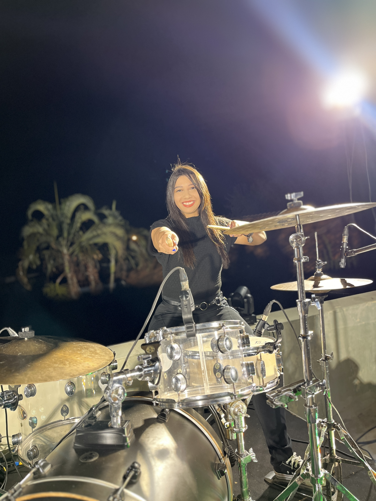
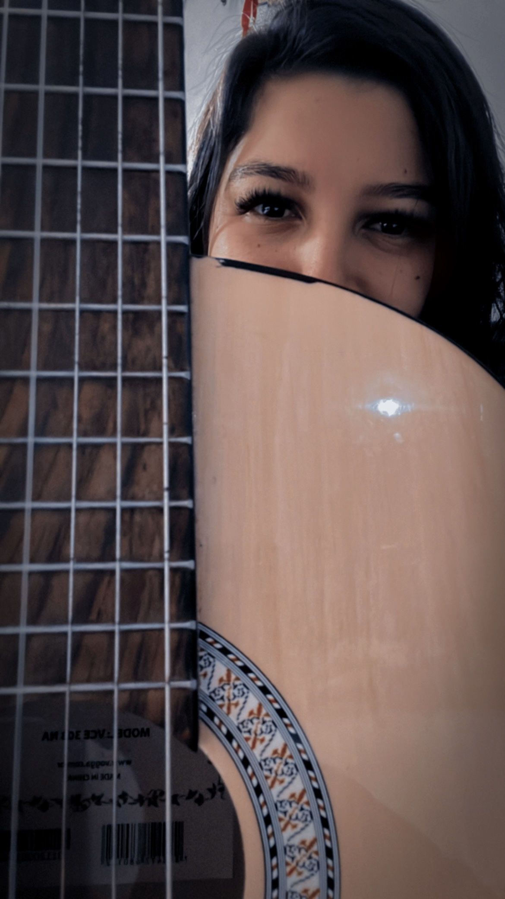
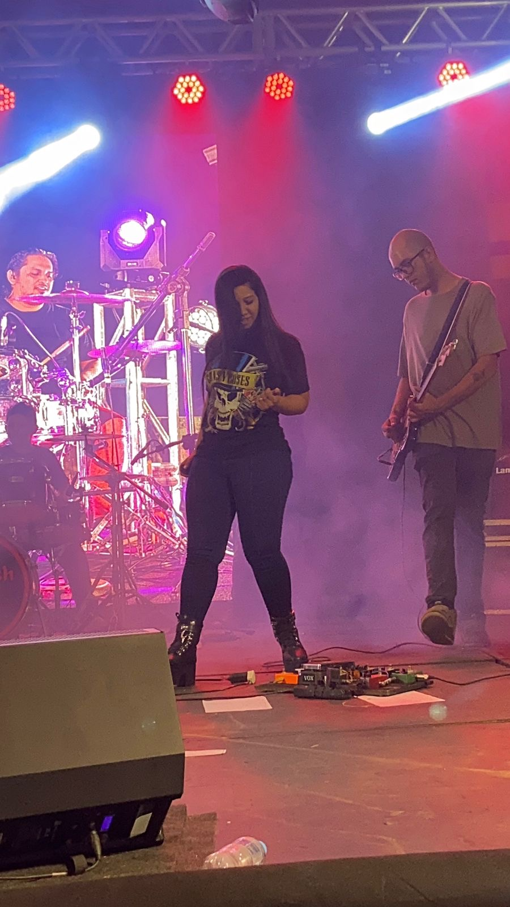
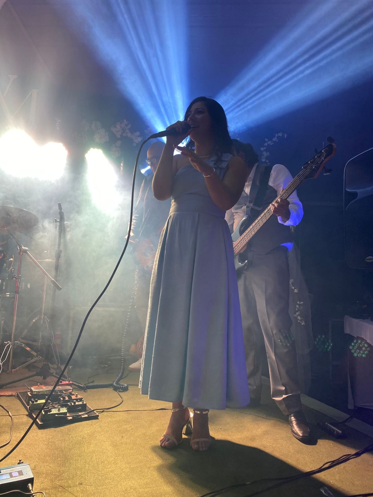
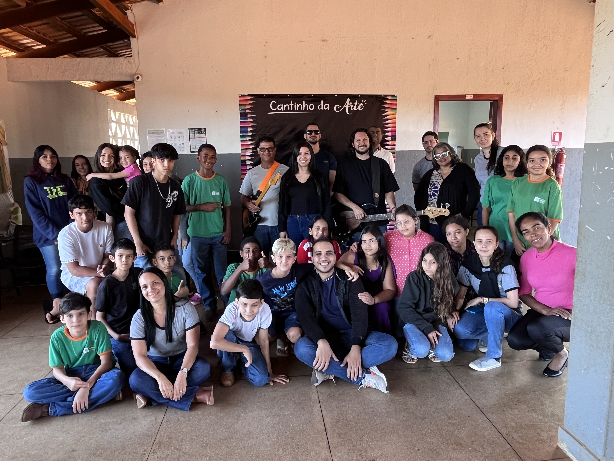
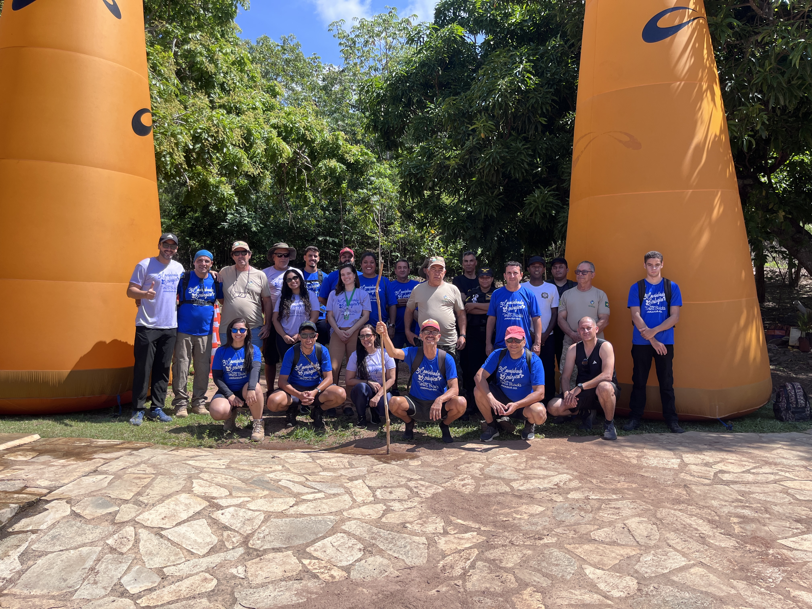
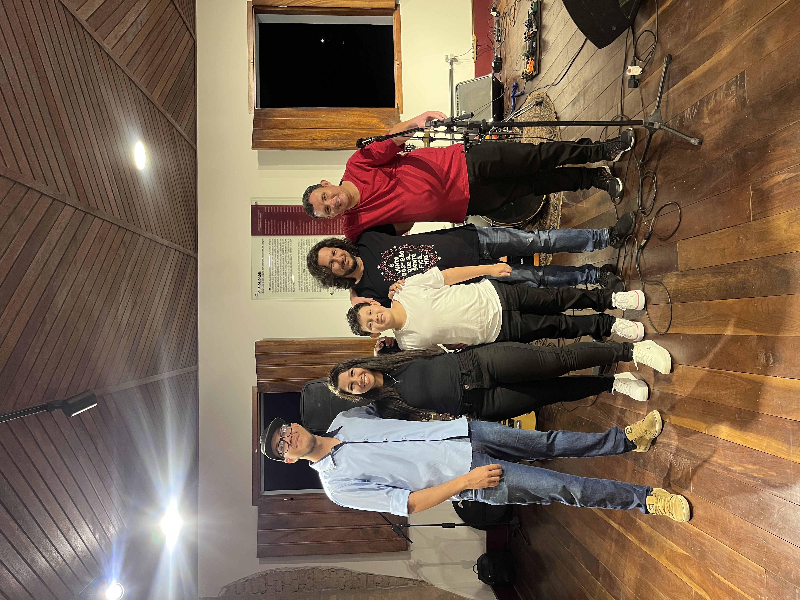
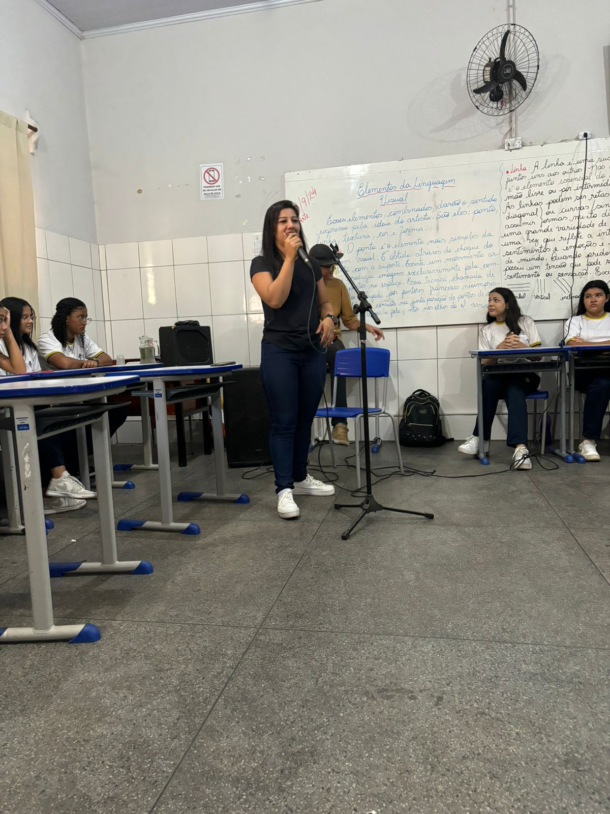

Gestão Cultural | Produção | Músicista | Tecnologia
Agente e produtora cultural com expertise em gestão de projetos culturais, tecnologia da informação e atuação artística. Especialista em políticas públicas de cultura e desenvolvimento de iniciativas que conectam arte, tecnologia e comunidade.


Profissional multifacetada formada em Tecnologia da Informação e atuação na área de produção e gestão cultural.
Trabalho com desenvolvimento e gestão de projetos culturais financiados por políticas públicas, incluindo Lei Aldir Blanc, CLAQUE - Retomada Cultural, Lei Paulo Gustavo e PNAB. Sou produtora cultural, músicista, intérprete e compositora.
Graduada em Tecnologia da Informação - UNIP (2021-2023)
Pós-Graduanda em Gestão Cultural - UEG / SECULT-GO
Jaraguá - Goiás | Disponível para deslocamento
Desenvolvimento e gestão de projetos culturais financiados por políticas públicas. Expertise em Lei Aldir Blanc, CLAQUE, Lei Paulo Gustavo e PNAB.
Produção de eventos, shows, festivais multiculturais e projetos artísticos. Direção de videoclipes, edição e divulgação de conteúdo.
Multi-instrumentista, compositora e intérprete. Fundadora da Banda Epistêmica. Ensino de música e aulas eletivas em instituições educacionais.
Técnica em T.I. com expertise em hardware, software, redes, desenvolvimento e administração de sistemas.
Parecerista e analista de projetos culturais. Elaboração de propostas simplificadas e documentação técnica para captação de recursos.
Assessoria cultural a artistas regionais. Membro do Conselho de Cultura e Turismo. Projetos de sustentabilidade e turismo cultural.

Projeto musical com direção de videoclipes, produção e divulgação. Multi-instrumentista fundadora e co-criadora da banda.

Desenvolvimento e gestão do festival multicultural do município com apresentações de artistas regionais e projetos do setor musical.

Desenvolvimento e gestão de projetos culturais aprovados pela Lei Paulo Gustavo no âmbito municipal de Jaraguá-GO.

Elaboração e organização da primeira caminhada ecológica de Jaraguá. Ativismo ambiental e cultural integrados.

Desenvolvimento e gestão de projetos culturais financiados pela Política Nacional Aldir Blanc em 2024.

Professora convidada para aulas eletivas sobre música no Colégio Ornelo. Educação cultural e musical na comunidade.
Estou disponível para conversas sobre projetos culturais, consultoria, parcerias e oportunidades.
Jaraguá - GO | Disponível para deslocamento e projetos remotos